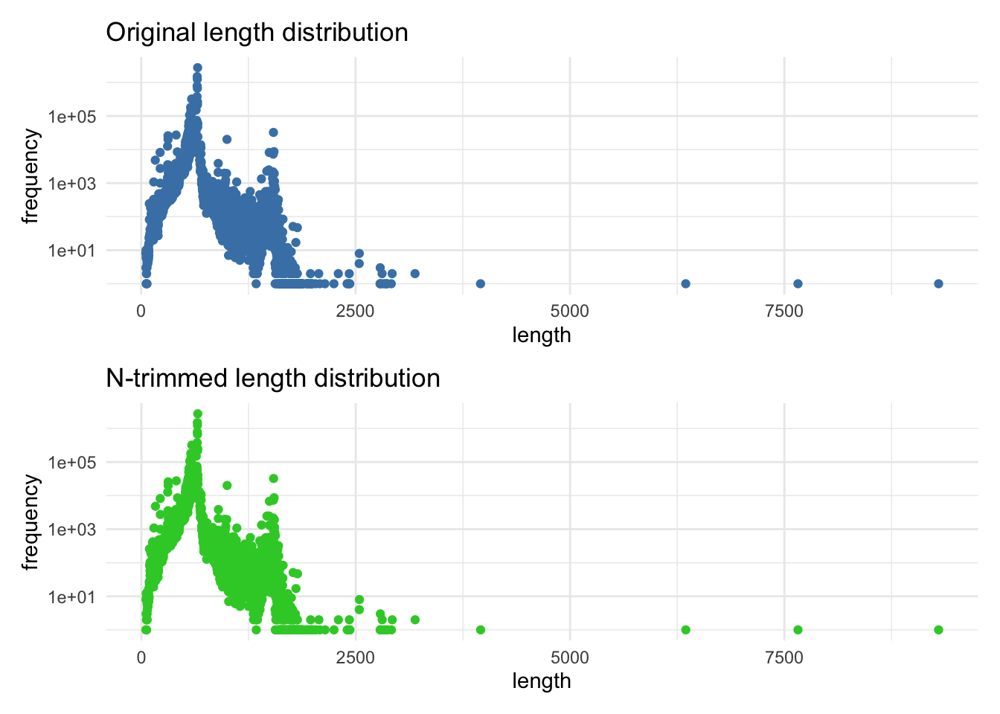
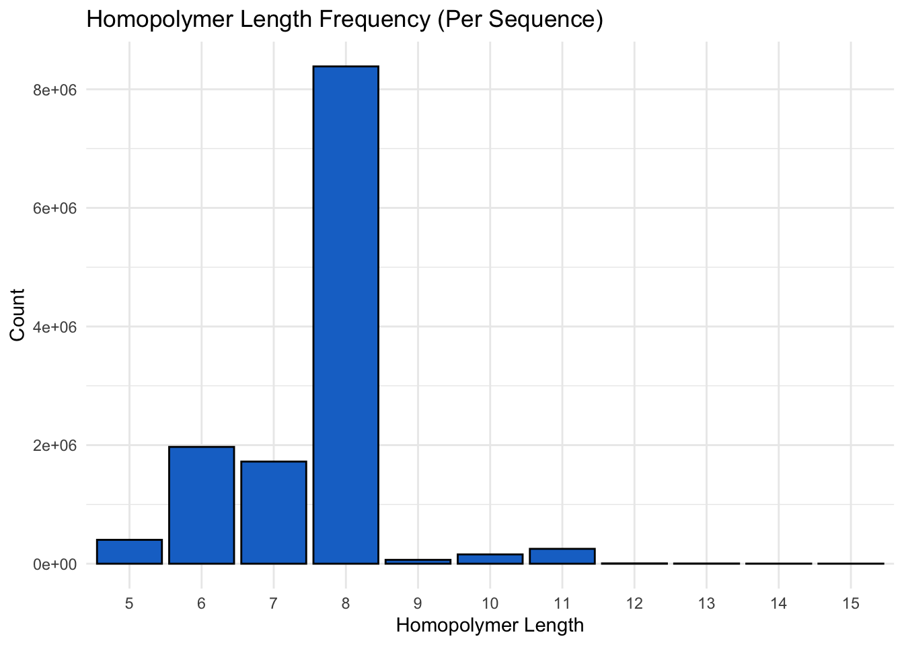
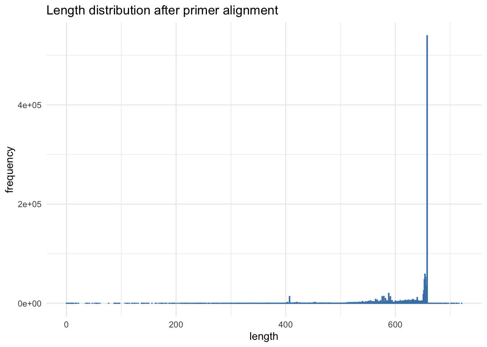

library(bold)
library(taxize)
library(tidyverse)
library(patchwork)
library(kableExtra)Creating Bold reference for CoI gene
Workflow is mostly based on 2019 version with necessary corrections. Notably, the current BOLD database in 2025 much larger than it was 2019. Following worklow does also use different primer pair. Workflow is mix of R, python and bash commands
Citations
Michael S Robeson II, Devon R O’Rourke, Benjamin D Kaehler, Michal Ziemski, Matthew R Dillon, Jeffrey T Foster, Nicholas A Bokulich. RESCRIPt: Reproducible sequence taxonomy reference database management for the masses. bioRxiv 2020.10.05.326504; doi: https://doi.org/10.1101/2020.10.05.326504
O’Rourke, DR, Bokulich, NA, Jusino, MA, MacManes, MD, Foster, JT. A total crapshoot? Evaluating bioinformatic decisions in animal diet metabarcoding analyses. Ecol Evol. 2020; 00: 1– 19. https://doi.org/10.1002/ece3.6594
Load R libraries
Bold and taxize libraries can be found and installed from github (ropensci/bold & ropensci/taxize).
1. Fetching CoI sequences
Functions used to fetch data from database and generate fasta and taxonomy files.
The original R code has been published as bold_datapull_byGroup.R (address https://osf.io/m5cgs)
## Safe filter function:
gatherBOLDdat_function <- function(theboldlist){
do.call(rbind.data.frame, theboldlist) %>%
mutate(across(everything(), as.character)) %>%
filter(markercode == "COI-5P") %>%
select(sequenceID, processid, bin_uri, genbank_accession, nucleotides, country,
institution_storing, phylum_name, class_name, order_name, family_name,
genus_name, species_name)
}
## Get metadata
gatherBOLDmetadat_function <- function(thedataframe){
thedataframe %>%
select(sequenceID, processid, bin_uri, genbank_accession, country,
institution_storing)
}
## Generate FASTA and taxonomy dataframe
makefasta_function <- function(thedataframe, kingdomname){
x.taxon <- thedataframe %>% select(sequenceID, phylum_name, class_name,
order_name, family_name, genus_name,
species_name)
x.taxon$kingdom_name <- paste0("k__",kingdomname)
x.taxon$phylum_name <- x.taxon$phylum_name %>% replace(is.na(.),
"") %>% sub("^", "p__", .)
x.taxon$class_name <- x.taxon$class_name %>% replace(is.na(.),
"") %>% sub("^", "c__", .)
x.taxon$order_name <- x.taxon$order_name %>% replace(is.na(.),
"") %>% sub("^", "o__", .)
x.taxon$family_name <- x.taxon$family_name %>% replace(is.na(.),
"") %>% sub("^", "f__", .)
x.taxon$genus_name <- x.taxon$genus_name %>% replace(is.na(.),
"") %>% sub("^", "g__", .)
x.taxon$species_name <- x.taxon$species_name %>% replace(is.na(.),
"") %>% sub("^", "s__", .)
x.taxon$taxon <- paste(x.taxon$kingdom_name, x.taxon$phylum_name,
x.taxon$class_name, x.taxon$order_name, x.taxon$family_name,
x.taxon$genus_name, x.taxon$species_name, sep = ";")
x.taxon <- x.taxon %>% select(sequenceID, taxon)
x.fasta <- thedataframe %>% select(sequenceID, nucleotides)
merge(x.taxon, x.fasta)
}Fetching is divided into ten parts.
First part contain non-chordate and non-arthropod species
# Vector with all animals that aren't Chordates or Arthropods
otherAnmlNames <- c("Acanthocephala","Acoelomorpha","Annelida","Brachiopoda",
"Bryozoa","Chaetognatha","Cnidaria","Ctenophora","Cycliophora",
"Echinodermata","Entoprocta","Gastrotricha","Gnathostomulida",
"Hemichordata","Kinorhyncha","Mollusca","Nematoda","Nematomorpha",
"Nemertea","Onychophora","Phoronida","Placozoa","Platyhelminthes",
"Porifera","Priapulida","Rhombozoa","Rotifera","Sipuncula",
"Tardigrada","Xenacoelomorpha")
# Apply get bold specimen+sequence data function to each vector element
altAnml_list <- lapply(otherAnmlNames, bold_seqspec)
# Combine data into a data frame
altAnml_df <- gatherBOLDdat_function(altAnml_list)
# Convert sequence data to fasta format that includes taxonomic data
alt_anml_fasta <- makefasta_function(altAnml_df, "Animalia")
# Write sequences to a file
write.csv(alt_anml_fasta, file = "raw/boldCustom.allNonArthChordAnml.seqNtaxa.csv",
quote = FALSE, row.names = FALSE)
# Metadata function collects other associated information
altAnml_meta <- gatherBOLDmetadat_function(altAnml_df)
# Write associated metadata to a file
write.csv(altAnml_meta, file = "raw/boldCustom.allNonArthChordAnml.meta.csv",
quote = FALSE, row.names = FALSE)
# Remove large data objects writing data
rm(altAnml_list, altAnml_df, alt_anml_fasta, altAnml_meta)
cat("✅ Done! Non-ArthdNChord data saved.\n")Part two contain fungal species
# Get all fungal species
fungiNames <- c('Ascomycota', 'Basidiomycota', 'Chytridiomycota',
'Glomeromycota', 'Myxomycota', 'Zygomycota')
fungi_list <- lapply(fungiNames, bold_seqspec)
fungi_df <- gatherBOLDdat_function(fungi_list)
fungi_fasta <- makefasta_function(fungi_df, "Fungi")
write.csv(fungi_fasta, file = "raw/boldCustom.fungi.seqNtaxa.csv",
quote = FALSE, row.names = FALSE)
fungi_meta <- gatherBOLDmetadat_function(fungi_df)
write.csv(fungi_meta, file = "raw/boldCustom.fungi.meta.csv",
quote = FALSE, row.names = FALSE)
rm(fungiNames, fungi_list, fungi_df, fungi_fasta, fungi_meta)
cat("✅ Done! Fungi data saved.\n")Part three contain protist species
# Get all protist records
protistNames <- c('Chlorarachniophyta', 'Ciliophora', 'Heterokontophyta',
'Pyrrophycophyta')
protist_list <- lapply(protistNames, bold_seqspec)
protist_df <- gatherBOLDdat_function(protist_list)
protist_fasta <- makefasta_function(protist_df, "Protozoa")
write.csv(protist_fasta, file = "raw/boldCustom.protist.seqNtaxa.csv",
quote = FALSE, row.names = FALSE)
protist_meta <- gatherBOLDmetadat_function(protist_df)
write.csv(protist_meta, file = "raw/boldCustom.protist.meta.csv",
quote = FALSE, row.names = FALSE)
rm(protistNames, protist_list, protist_df, protist_fasta, protist_meta)
cat("✅ Done! Protist data saved.\n")Part four contain chordata species
chordateNames <- downstream("Chordata", db = "bold", downto = "class")
# 14 classes represented. See 'chordate_list$Chordata$name'
chordate_list <- lapply(chordateNames$Chordata$name, bold_seqspec)
chordate_df <- gatherBOLDdat_function(chordate_list)
chordate_fasta <- makefasta_function(chordate_df, "Animalia")
write.csv(chordate_fasta, file = "raw/boldCustom.chordate.seqNtaxa.csv",
quote = FALSE, row.names = FALSE)
chordate_meta <- gatherBOLDmetadat_function(chordate_df)
write.csv(chordate_meta, file = "raw/boldCustom.chordate.meta.csv",
quote = FALSE, row.names = FALSE)
rm(chordateNames, chordate_list, chordate_df, chordate_fasta, chordate_meta)
cat("✅ Done! Chordate data saved.\n")Part five contain arthropod species that are not insects
allArthropod_names <- downstream("Arthropoda", db = "bold", downto = "class")
otherArth_names <- allArthropod_names$Arthropoda %>%
filter(name != "Insecta")%>% select(name)
otherArth_list <- lapply(otherArth_names, bold_seqspec)
otherArth_df <- gatherBOLDdat_function(otherArth_list)
otherArth_fasta <- makefasta_function(otherArth_df, "Animalia")
write.csv(otherArth_fasta, file = "raw/boldCustom.otherArthropods.seqNtaxa.csv",
quote = FALSE, row.names = FALSE)
otherArth_meta <- gatherBOLDmetadat_function(otherArth_df)
write.csv(otherArth_meta, file = "raw/boldCustom.otherArthropods.meta.csv",
quote = FALSE, row.names = FALSE)
rm(otherArth_df, otherArth_fasta, otherArth_meta)
cat("✅ Done! Non-insect arthropod data saved.\n")Part six contain insect species that not excluded in the first row
excludeNames <- c("Coleoptera","Diptera","Hymenoptera","Lepidoptera")
allInsect_names <- downstream("Insecta", db = "bold", downto = "order")
otherInsects_names <- allInsect_names$Insecta %>%
filter(!name %in% excludeNames) %>% select(name)
otherInsects_list <- lapply(otherInsects_names, bold_seqspec)
otherInsects_df <- gatherBOLDdat_function(otherInsects_list)
otherInsects_fasta <- makefasta_function(otherInsects_df, "Animalia")
write.csv(otherInsects_fasta, file = "raw/boldCustom.otherInsects.seqNtaxa.csv",
quote = FALSE, row.names = FALSE)
otherInsects_meta <- gatherBOLDmetadat_function(otherInsects_df)
write.csv(otherInsects_meta, file = "raw/boldCustom.otherInsects.meta.csv",
quote = FALSE, row.names = FALSE)
rm(otherInsectOrder_names, otherInsects_list, otherInsects_df, otherInsects_fasta,
otherInsects_meta)
cat("✅ Done! Other insect data saved.\n")Part seven contain coleoptera scecies
Col_list <- downstream("Coleoptera", db = "bold", downto = "family")
Col_Carabidae_names <- Col_list$Coleoptera %>%
filter(name=="Carabidae") %>% select(name)
Col_Carabidae_list <- lapply(Col_Carabidae_names, bold_seqspec)
Col_Carabidae_df <- gatherBOLDdat_function(Col_Carabidae_list)
Col_Chrysomelidae_names <- Col_list$Coleoptera %>%
filter(name=="Chrysomelidae") %>% select(name)
Col_Chrysomelidae_list <- lapply(Col_Chrysomelidae_names, bold_seqspec)
Col_Chrysomelidae_df <- gatherBOLDdat_function(Col_Chrysomelidae_list)
Col_Curculionidae_names <- Col_list$Coleoptera %>%
filter(name=="Curculionidae") %>% select(name)
Col_Curculionidae_list <- lapply(Col_Curculionidae_names, bold_seqspec)
Col_Curculionidae_df <- gatherBOLDdat_function(Col_Curculionidae_list)
Col_Staphylinidae_names <- Col_list$Coleoptera %>%
filter(name=="Staphylinidae") %>% select(name)
Col_Staphylinidae_list <- lapply(Col_Staphylinidae_names, bold_seqspec)
Col_Staphylinidae_df <- gatherBOLDdat_function(Col_Staphylinidae_list)
excludeColNames <- c("Carabidae","Chrysomelidae","Curculionidae","Staphylinidae")
Col_allother_names <- Col_list$Coleoptera %>%
filter(!name %in% excludeColNames) %>% select(name)
Col_allothers_list <- lapply(Col_allother_names, bold_seqspec)
Col_allothers_df <- gatherBOLDdat_function(Col_allothers_list)
# Join data together
Col_df <- rbind(Col_Carabidae_df, Col_Chrysomelidae_df, Col_Curculionidae_df, Col_Staphylinidae_df, Col_allothers_df)
rm(Col_Carabidae_df, Col_Chrysomelidae_df, Col_Curculionidae_df, Col_Staphylinidae_df, Col_allothers_df)
rm(Col_Carabidae_names, Col_Chrysomelidae_names, Col_Curculionidae_names, Col_Staphylinidae_names, Col_allother_names)
rm(Col_Carabidae_list, Col_Chrysomelidae_list, Col_Curculionidae_list, Col_Staphylinidae_list, Col_allothers_list)
Col_fasta <- makefasta_function(Col_df, "Animalia")
write.csv(Col_fasta, file = "raw/boldCustom.onlyColeoptera.seqNtaxa.csv",
quote = FALSE, row.names = FALSE)
Col_meta <- gatherBOLDmetadat_function(Col_df)
write.csv(Col_meta, file = "raw/boldCustom.onlyColeoptera.meta.csv",
quote = FALSE, row.names = FALSE)
rm(Col_df, Col_fasta, Col_meta)
cat("✅ Done! Coleoptera data saved.\n")Part 8 contain Hymenoptera species
Hym_list <- downstream("Hymenoptera", db = "bold", downto = "family")
Hym_Braconidae_names <- Hym_list$Hymenoptera %>%
filter(name=="Braconidae") %>% select(name)
Hym_Braconidae_list <- lapply(Hym_Braconidae_names, bold_seqspec)
Hym_Braconidae_df <- gatherBOLDdat_function(Hym_Braconidae_list)
Hym_Formicidae_names <- Hym_list$Hymenoptera %>%
filter(name=="Formicidae") %>% select(name)
Hym_Formicidae_list <- lapply(Hym_Formicidae_names, bold_seqspec)
Hym_Formicidae_df <- gatherBOLDdat_function(Hym_Formicidae_list)
Hym_Ichneumonidae_names <- Hym_list$Hymenoptera %>%
filter(name=="Ichneumonidae") %>% select(name)
Hym_Ichneumonidae_list <- lapply(Hym_Ichneumonidae_names, bold_seqspec)
Hym_Ichneumonidae_df <- gatherBOLDdat_function(Hym_Ichneumonidae_list)
Hym_Platygastridae_names <- Hym_list$Hymenoptera %>%
filter(name=="Platygastridae") %>% select(name)
Hym_Platygastridae_list <- lapply(Hym_Platygastridae_names, bold_seqspec)
Hym_Platygastridae_df <- gatherBOLDdat_function(Hym_Platygastridae_list)
excludeColNames <- c("Braconidae","Formicidae","Ichneumonidae","Platygastridae")
Hym_allother_names <- Hym_list$Hymenoptera %>%
filter(!name %in% excludeColNames) %>% select(name)
Hym_allothers_list <- lapply(Hym_allother_names, bold_seqspec)
Hym_allothers_df <- gatherBOLDdat_function(Hym_allothers_list)
rm(Hym_Braconidae_list, Hym_Formicidae_list, Hym_Ichneumonidae_list,
Hym_Platygastridae_list, Hym_allothers_list)
rm(Hym_Braconidae_names, Hym_Formicidae_names, Hym_Ichneumonidae_names, Hym_Platygastridae_names, Hym_allothers_names)
#Join data together
Hym_df <- rbind(Hym_Braconidae_df, Hym_Formicidae_df, Hym_Ichneumonidae_df, Hym_Platygastridae_df, Hym_allothers_df)
rm(Hym_Braconidae_df, Hym_Formicidae_df, Hym_Ichneumonidae_df, Hym_Platygastridae_df, Hym_allothers_df)
Hym_fasta <- makefasta_function(Hym_df, "Animalia")
write.csv(Hym_fasta, file = "raw/boldCustom.onlyHymenoptera.seqNtaxa.csv",
quote = FALSE, row.names = FALSE)
Hym_meta <- gatherBOLDmetadat_function(Hym_df)
write.csv(Hym_meta, file = "raw/boldCustom.onlyHymenoptera.meta.csv",
quote = FALSE, row.names = FALSE)
rm(Hym_df, Hym_fasta, Hym_meta)
cat("✅ Done! Hymenoptera data saved.\n")Part nin contain Lepdoptera species
Lep_list <- downstream("Lepidoptera", db = "bold", downto = "family")
Lep_Noctuidae_names <- Lep_list$Lepidoptera %>%
filter(name=="Noctuidae") %>% select(name)
Lep_Noctuidae_list <- lapply(Lep_Noctuidae_names, bold_seqspec)
Lep_Noctuidae_df <- gatherBOLDdat_function(Lep_Noctuidae_list)
Lep_Erebidae_names <- Lep_list$Lepidoptera %>%
filter(name=="Erebidae") %>% select(name)
Lep_Erebidae_list <- lapply(Lep_Erebidae_names, bold_seqspec)
Lep_Erebidae_df <- gatherBOLDdat_function(Lep_Erebidae_list)
Lep_Sphingidae_names <- Lep_list$Lepidoptera %>%
filter(name=="Sphingidae") %>% select(name)
Lep_Sphingidae_list <- lapply(Lep_Sphingidae_names, bold_seqspec)
Lep_Sphingidae_df <- gatherBOLDdat_function(Lep_Sphingidae_list)
Lep_Geometridae_names <- Lep_list$Lepidoptera %>%
filter(name=="Geometridae") %>% select(name)
Lep_Geometridae_list <- lapply(Lep_Geometridae_names, bold_seqspec)
Lep_Geometridae_df <- gatherBOLDdat_function(Lep_Geometridae_list)
excludeColNames <- c("Noctuidae","Erebidae","Sphingidae","Geometridae")
Lep_allother_names <- Lep_list$Lepidoptera %>%
filter(!name %in% excludeColNames) %>% select(name)
Lep_allothers_list <- lapply(Lep_allother_names, bold_seqspec)
Lep_allothers_df <- gatherBOLDdat_function(Lep_allothers_list)
rm(Lep_Noctuidae_names, Lep_Erebidae_names, Lep_Sphingidae_names,
Lep_Geometridae_names, Lep_allother_names)
rm(Lep_Noctuidae_list, Lep_Erebidae_list, Lep_Sphingidae_list,
Lep_Geometridae_list, Lep_allother_list)
# Join data together
Lep_df <- rbind(Lep_Noctuidae_df, Lep_Erebidae_df, Lep_Sphingidae_df,
Lep_Geometridae_df, Lep_allothers_df)
rm(Lep_Noctuidae_df, Lep_Erebidae_df, Lep_Sphingidae_df, Lep_Geometridae_df,
Lep_allothers_df)
Lep_fasta <- makefasta_function(Lep_df, "Animalia")
write.csv(Lep_fasta, file = "raw/boldCustom.onlyLepidoptera.seqNtaxa.csv",
quote = FALSE, row.names = FALSE)
Lep_meta <- gatherBOLDmetadat_function(Lep_df)
write.csv(Lep_meta, file = "raw/boldCustom.onlyLepidoptera.meta.csv",
quote = FALSE, row.names = FALSE)
rm(Lep_df, Lep_fasta, Lep_meta)
cat("✅ Done! Lepiodoptera data saved.\n")Part ten contain diptera species. Code is modified to split data into even smaller chunks
# Get Diptera family list
diptera_list <- downstream("Diptera", db = "bold", downto = "family")
excludeDipNames <- c("Sciaridae","Cecidomyiidae","Chironomidae")
diptera_allother_names <- diptera_list$Diptera %>%
filter(!name %in% excludeDipNames) %>%
pull(name)
# Chunk size: 50 families per chunk
chunk_size <- 50
family_chunks <- split(diptera_allother_names,
ceiling(seq_along(diptera_allother_names)/chunk_size))
# Create empty list to hold results
diptera_chunks_df <- list()
for (i in seq_along(family_chunks)) {
cat(sprintf("Processing chunk %d of %d ...\n", i, length(family_chunks)))
# Download from BOLD
chunk_data <- lapply(family_chunks[[i]], function(fam) {
tryCatch(
bold_seqspec(taxon = fam),
error = function(e) {
cat(sprintf(" ⚠️ Failed: %s\n", fam))
NULL
}
)
})
# Clean and store results
chunk_df <- gatherBOLDdat_function(chunk_data)
diptera_chunks_df[[i]] <- chunk_df
}
# Combine all diptera records from chunks
Dip_allothers_df <- bind_rows(diptera_chunks_df)
# Handle the 3 special Diptera families
Dip_Sciaridae_df <- gatherBOLDdat_function(list(bold_seqspec("Sciaridae")))
Dip_Cecidomyiidae_df <- gatherBOLDdat_function(list(bold_seqspec("Cecidomyiidae")))
Dip_Chironomidae_df <- gatherBOLDdat_function(list(bold_seqspec("Chironomidae")))
# Final combined Diptera dataframe
Dip_df <- bind_rows(Dip_Sciaridae_df, Dip_Cecidomyiidae_df, Dip_Chironomidae_df, Dip_allothers_df)
# Write FASTA+taxonomy
Dip_fasta <- makefasta_function(Dip_df, "Animalia")
write.csv(Dip_fasta, file = "raw/boldCustom.onlyDiptera.seqNtaxa.csv",
quote = FALSE, row.names = FALSE)
# Write metadata
Dip_meta <- gatherBOLDmetadat_function(Dip_df)
write.csv(Dip_meta, file = "raw/boldCustom.onlyDiptera.meta.csv",
quote = FALSE, row.names = FALSE)
cat("✅ Done! Diptera data saved.\n")Merge data files into a single file, duplicate id’s are also removed
cat raw/*.seqNtaxa.csv | \
grep -v 'sequenceID,taxon,nucleotides' | sort | uniq | \
awk -F ',' '{OFS="\t"};{print $1";tax="$2, $3}' | \
sed 's/^/>/g' | tr '\t' '\n' > raw/bold_allrawSeqs.fastaFull dataset contain 13,097,265 sequences
Next removal of sequences that contain non-IUPAC characters
cd raw
# Step 1: Get line numbers of sequences containing non-IUPAC characters
grep -v '^>' bold_allrawSeqs.fasta | grep -n '[^THADGRC\.SMBNWVKY-]' > badseqs.txt
# Step 2: Convert sequence line numbers to FASTA line numbers
cut -d ':' -f 1 badseqs.txt | while read val; do
myvar1=$((val * 2)) # Sequence lines are every 2nd line in FASTA
myvar2=$((myvar1 - 1)) # Header line
echo "${myvar2}d"
echo "${myvar1}d"
done > droplines.sed
# Step 3: Use sed to delete the lines
sed -f droplines.sed bold_allrawSeqs.fasta > cleaned_bold_allrawSeqs.fastaAfter step dataset contain 13,097,223 sequences
Next step is preparation of fasta and taxonomy files
cd raw
## First make the fasta file
sed 's/;tax=k.*//' cleaned_bold_allrawSeqs.fasta > bold_rawSeqs_forQiime.fasta
## Next make the taxonomy file
grep '^>' cleaned_bold_allrawSeqs.fasta | sed 's/^>//' | \
awk '{for(i=1;i<2;i++)sub(";","\t")}1' > bold_rawTaxa_forQiime.tsvSanity check, taxa file contains 13,097,223 lines. That’s equal to the number of sequences
Next merging sequence related metadata
cat raw/*.meta.csv | \
grep -v 'sequenceID,processid,bin_uri,genbank_accession,country, institution_storing' | \
awk '{for(i=1;i<6;i++)sub(",","\t")}1' | sort -uk1,1 | gzip >qiime2/bold_rawMetadata_forQiime.tsv.gzImport of gapped sequences to QIIME2 is not possible. Thus, use of seqkit to remove gaps
cd raw
#degap with seqkit
/opt/miniforge3/bin/seqkit seq -w0 -g bold_rawSeqs_forQiime.fasta > bold_rawSeqs_forQiime.degapped.fastaDegapped sequence data can be imported to QIIME2
#!/bin/bash
source ~/.miniforge3/etc/profile.d/conda.sh
conda activate qiime2-amplicon-2024.10
# sequence file
qiime tools import --input-path raw/bold_rawSeqs_forQiime.degapped.fasta \
--type 'FeatureData[Sequence]' --output-path qiime2/bold_raw_fasta.qza
# taxonomy file
qiime tools import --input-path raw/bold_rawTaxa_forQiime.tsv \
--type 'FeatureData[Taxonomy]' --input-format HeaderlessTSVTaxonomyFormat \
--output-path qiime2/bold_rawTaxa.qza Examination of sequence data set
Getting sequence length distribution from the degapped fasta file
grep -v '^>' raw/bold_rawSeqs_forQiime.degapped.fasta | awk '{print length}' | sort | uniq -c | sort -k2,2n > plots/untrimmed_seqlength.txtSecond part file trims preceding or trailing N’s from sequences
grep -v '^>' raw/bold_rawSeqs_forQiime.degapped.fasta | \
sed 's/^N*//' | rev | sed 's/^N*//' | \
awk '{print length}' | sort | uniq -c | sort -k2,2n > plots/Ntrimmed_seqlength.txtPlotting sequence lengths
# read txt files
original <- read_table("plots/untrimmed_seqlength.txt", col_names = FALSE)
n_trimmed <- read_table("plots/Ntrimmed_seqlength.txt", col_names = FALSE)
colnames(original) <- c("frequency", "length")
colnames(n_trimmed) <- c("frequency", "length")
# plots
p1 <- ggplot(original, aes(x=length, y=frequency)) +
geom_point(color="steelblue") + ggtitle("Original length distribution") +
scale_y_log10() + theme_minimal()
p2 <- ggplot(n_trimmed, aes(x=length, y=frequency)) +
geom_point(color="limegreen") + ggtitle("N-trimmed length distribution") +
scale_y_log10()+ theme_minimal()
p1/p2
Visually there is no difference between origianl and N-trimmed sequences.
Table shows that majority sequence lengths fall between 500-700 bp
distribution <- original %>%
filter(length >= 100, length <= 1000) %>%
mutate(bin = cut(length,
breaks = seq(100, 1000, by = 100),
include.lowest = TRUE,
right = FALSE)) %>%
group_by(bin) %>%
summarise(total_frequency = sum(frequency), .groups = "drop") %>%
mutate(cumulative_proportion = 100 * total_frequency / sum(total_frequency))
kable(distribution, digits=1) %>% kable_styling()Finally, examination of homopolymer sequence lengths. Run first homopolymer_motifs.py script and then plot categorized data.
# Read & filter
lengths <- read_table("plots/homopolymer_lengths.txt", col_names = FALSE)
lengths_filtered <- lengths[lengths >= 5 & lengths <= 15]
# Turn into a factor with all levels 5–15
df <- data.frame(
length = factor(lengths_filtered,
levels = as.character(5:15)) # explicit levels
)
# Plot, preserving zero-count categories
ggplot(df, aes(x = length)) +
geom_bar(fill = "dodgerblue3", color = "black") +
scale_x_discrete(drop = FALSE) + # keep all 5–15 on the axis
labs(
title = "Homopolymer Length Frequency (Per Sequence)",
x = "Homopolymer Length",
y = "Count"
) +
theme_minimal() 
Most sequences contain homopolymers 8 bp or less long. Longer than 11 is occurs extremely rare.
Filtering
Trimming reads that begin or end with string of N’s.
# removes prefix or suffix N's
cat raw/bold_rawSeqs_forQiime.degapped.fasta | paste - - | \
awk -v OFS="\t" '{gsub(/^[N]+/,"",$2);print}' | \
rev | sed 's/^N*//' | \
rev | tr '\t' '\n' > raw/bold_outerNtrimmed.fastaNext filtering of suspiciously long homopolymer motifs and ambiguous bases containing sequences, and all outlier sequence lengths based on previous analysis.
#!/bin/bash
source ~/.miniforge3/etc/profile.d/conda.sh
conda activate qiime2-amplicon-2024.10
# Import N-trimmed reads to qiime
qiime tools import \
--input-path raw/bold_outerNtrimmed.fasta \
--output-path qiime2/bold_outerNtrimmed.qza \
--type 'FeatureData[Sequence]'
# Filter first reads that have longer than 11 bp homopolymers or more than
# 5 degenerate bases
qiime rescript cull-seqs \
--i-sequences qiime2/bold_outerNtrimmed.qza \
--p-num-degenerates 5 \
--p-homopolymer-length 11 \
--o-clean-sequences qiime2/bold_ambi_hpoly_filtd_seqs.qza
# Filter outlier lengths
qiime rescript filter-seqs-length \
--i-sequences qiime2/bold_ambi_hpoly_filtd_seqs.qza \
--p-global-min 300 \
--p-global-max 1000 \
--o-filtered-seqs qiime2/bold_ambi_hpoly_length_filtd_seqs.qza \
--o-discarded-seqs qiime2/bold_ambi_hpoly_length_discarded_seqs.qzaDereplication removes redundancy of identical sequences and tracks taxonomy at the same time
#!/bin/bash
# Activate environment
source ~/.miniforge3/etc/profile.d/conda.sh
conda activate qiime2-amplicon-2024.10
# Run dereplication
qiime rescript dereplicate \
--i-sequences qiime2/bold_ambi_hpoly_length_filtd_seqs.qza \
--i-taxa qiime2/bold_rawTaxa.qza \
--p-mode 'super' \
--p-derep-prefix \
--p-threads 8 \
--o-dereplicated-sequences qiime2/bold_derep1_seqs.qza \
--o-dereplicated-taxa qiime2/bold_derep1_taxa.qzaFiltering sequences that don’t have phylum level identity
#!/bin/bash
# Activate environment
source ~/.miniforge3/etc/profile.d/conda.sh
conda activate qiime2-amplicon-2024.10
## filter taxonomy file
qiime rescript filter-taxa --verbose \
--i-taxonomy qiime2/bold_derep1_taxa.qza \
--p-exclude 'p__;' \
--o-filtered-taxonomy qiime2/bold_derep1_PhylumFiltd_taxa.qza
## filter sequences file
qiime taxa filter-seqs --verbose \
--i-sequences qiime2/bold_derep1_seqs.qza \
--i-taxonomy qiime2/bold_derep1_taxa.qza \
--p-exclude 'p__;' \
--o-filtered-sequences qiime2/bold_derep1_PhylumFiltd_seqs.qzaAfter the step, total number of sequences is 5,431,013
Alignment
Export files back to uncompressed format
#!/bin/bash
# Activate environment
source ~/.miniforge3/etc/profile.d/conda.sh
conda activate qiime2-amplicon-2024.10
qiime tools export --input-path qiime2/bold_derep1_seqs.qza \
--output-path boldFullSeqs
qiime tools export --input-path qiime2/bold_derep1_taxa.qza \
--output-path boldFullTaxaWe can further filter length based on earlier information.
Almost all COI sequences have length of 650-660 bp
#!/bin/bash
# Activate environment
source ~/.miniforge3/etc/profile.d/conda.sh
conda activate base
seqkit seq --min-len 400 --max-len 750 -w 0 boldFullSeqs/dna-sequences.fasta \
> boldFullSeqs/boldFull_lengthFiltd_seqs.fasta
grep -c '^>' boldFullSeqs/boldFull_lengthFiltd_seqs.fastaOver 97 % of sequences remained after filtering
Next we filter out all non-arthoropoda species
## generate the .list
grep 'p__Arthropoda;c__Insecta' boldFullTaxa/taxonomy.tsv | \
grep -v 's__$' | grep -v 's__.*sp.$' | grep -v '-' | cut -f 1 \
> boldFullTaxa/insect_species.list
## filter the sequences to include only those in the .list
seqkit grep --pattern-file boldFullTaxa/insect_species.list boldFullSeqs/boldFull_lengthFiltd_seqs.fasta > boldFullSeqs/boldFull_lengthNtaxaFiltd_seqs.fasta
grep -c '^>' boldFullSeqs/boldFull_lengthNtaxaFiltd_seqs.fastaDataset contain 1,442,777 arthoropoda sequences
As a final step, we discard rest of ambigious bases containing sequences
#!/bin/bash
# Activate environment
source ~/.miniforge3/etc/profile.d/conda.sh
conda activate base
seqkit fx2tab -n -i -a boldFullSeqs/boldFull_lengthNtaxaFiltd_seqs.fasta \
| awk '{if ($2 == "ACGT") print $1}' > boldFullSeqs/nonAmbig_featureIDs.txt
seqkit grep --pattern-file boldFullSeqs/nonAmbig_featureIDs.txt \
boldFullSeqs/boldFull_lengthNtaxaFiltd_seqs.fasta -w 0 > boldFullSeqs/boldFull_lengthNtaxaNambigFiltd_seqs.fasta
grep -c '^>' boldFullSeqs/boldFull_lengthNtaxaNambigFiltd_seqs.fastaWe have 1,307,617 sequences left
For alignment, small subset of sequences is created
#!/bin/bash
# Activate environment
source ~/.miniforge3/etc/profile.d/conda.sh
conda activate base
seqkit sample --rand-seed 101 --number 2000 -w 0--two-pass \
boldFullSeqs/boldFull_lengthNtaxaNambigFiltd_seqs.fasta \
>mafft/bold_mafftRefs_subseqs_seqs.fastaAlignment of small subset
#!/bin/bash
# Activate environment
source ~/.miniforge3/etc/profile.d/conda.sh
conda activate qiime2-amplicon-2024.10
export MAFFT_TMPDIR=/Volumes/data
mafft --auto --thread 8 mafft/bold_mafftRefs_subseqs_seqs.fasta > mafft/reference_MSAPCR primers (fwd & rev-comp of rev primer) is used to guide alignment
#!/bin/bash
# Activate environment
source ~/.miniforge3/etc/profile.d/conda.sh
conda activate qiime2-amplicon-2024.10
mafft --multipair --addfragments lepidoptera.fasta --keeplength \
--thread 8 --mapout --reorder mafft/reference_MSA > mafft/ref_primerPrimer.fasta.map file has information how primers are aligned in sequences. In subset, first non-primer base is 55 and last 965.
We can extract alignment region using extract_alignment_region.py python script
#!/bin/bash
# Activate environment
source ~/.miniforge3/etc/profile.d/conda.sh
conda activate base
python extract_alignment_region.py \
-i mafft/ref_primer \
-o mafft/ref_primer_coordinateTrimmed.fasta \
-s 55 \
-e 965Alignment looks as expected. Avg length of sequences is 629, N50 655 bp.
We need to remove 2000 sequences we used to build ref_primer file or we will end up having an alignment with 2000 duplicate sequences.
#!/bin/bash
# Activate environment
source ~/.miniforge3/etc/profile.d/conda.sh
conda activate base
## create a list of the sequences to drop:
grep '^>' mafft/bold_mafftRefs_subseqs_seqs.fasta | sed 's/^>//' > mafft/droplist.txt
## filter OUT the sequences to include only those NOT in the droplist.txt file
seqkit grep -v --pattern-file mafft/droplist.txt boldFullSeqs/boldFull_lengthNtaxaNambigFiltd_seqs.fasta > mafft/seqsForLargeAlignment.fastaNow we can align sequences. This step does have quite high RAM requirements
#!/bin/bash
# Activate environment
source ~/.miniforge3/etc/profile.d/conda.sh
conda activate qiime2-amplicon-2024.10
export MAFFT_TMPDIR=/Volumes/data
mafft --auto --addfull boldFullSeqs/boldFull_lengthNtaxaNambigFiltd_seqs.fasta \
--memsave --keeplength --thread 10 mafft/ref_primer > mafft/giant_alignmentWe will confirm that large alignment behaves similarly as subset of sequences did
# copy primer map file
mv lepidoptera.fasta.map primer.map_toSmall
#!/bin/bash
# Activate environment
source ~/.miniforge3/etc/profile.d/conda.sh
conda activate base
seqkit head -n 2000 mafft/giant_alignment > mafft/subset_giant_alignment
conda activate qiime2-amplicon-2024.10
mafft --multipair --addfragments lepidoptera.fasta --keeplength --thread 10 \
--mapout mafft/subset_giant_alignment \
> mafft/subset_giant_alignment_secondaryPrimerAlign
mv lepidoptera.fasta.map lepidoptera.fasta.map_toGiantFasta.map file reveals that CoI region has remained exactly same from 55 to 965 bp
Trim large alignment using same python script
#!/bin/bash
# Activate environment
source ~/.miniforge3/etc/profile.d/conda.sh
conda activate base
python extract_alignment_region.py \
-i mafft/giant_alignment \
-o mafft/bold_derep1_lepi_tmp.fasta \
-s 55 \
-e 965You can confirm that primers are trimmed like they should using earlier python script
grep Lep --color -A 1 mafft/bold_derep1_lepi_tmp.fastaRemove primers from the alignment file
#!/bin/bash
# Activate environment
source ~/.miniforge3/etc/profile.d/conda.sh
conda activate base
## make a list of sequence headers to drop:
grep Lep mafft/bold_derep1_lepi_tmp.fasta | sed 's/>//' | sed 's/[ \t]*$//' \
> mafft/dropPrimers.txt
## exclude these sequences from the alignment file:
seqkit grep -v -f mafft/dropPrimers.txt mafft/bold_derep1_lepi_tmp.fasta | seqkit \
seq --upper-case -w 0 > mafft/bold_derep1_lepi.fastaDataset contains 1,307,617 sequences.
Trim gaps and create length frequency file
grep -v '^>' mafft/bold_derep1_lepi.fasta | sed 's/-//g' | awk \
'{print length}' | sort | uniq -c > mafft/seq_lengths.freq.tablePlot aligned primer trimmed length distribution
lengths <- read_table("mafft/seq_lengths.freq.table", col_names = FALSE)
colnames(lengths) <- c("frequency", "length")
# Create the histogram with bin width of 5bp
ggplot(lengths, aes(x = length, y=frequency)) +
geom_col(color="steelblue") + theme_minimal() +
ggtitle("Length distribution after primer alignment")
Dataset is ready to be imported back to the qiime. Based on previous plot, we filter all aligned sequences shorter than 400 bp
#!/bin/bash
# Activate environment
source ~/.miniforge3/etc/profile.d/conda.sh
conda activate qiime2-amplicon-2024.10
qiime tools import \
--input-path mafft/bold_derep1_lepi.fasta \
--output-path qiime2/bold_derep1_lepi.qza \
--type 'FeatureData[AlignedSequence]'
qiime rescript degap-seqs \
--i-aligned-sequences qiime2/bold_derep1_lepi.qza \
--p-min-length 400 \
--o-degapped-sequences qiime2/bold_derep1_lepi_nogaps.qzaAfter primer trimming, it is necessary to dereplicate sequences again
#!/bin/bash
# Activate environment
source ~/.miniforge3/etc/profile.d/conda.sh
conda activate qiime2-amplicon-2024.10
# Dereplicat
qiime rescript dereplicate \
--i-sequences qiime2/bold_derep1_lepi_nogaps.qza \
--i-taxa qiime2/bold_rawTaxa.qza \
--p-mode 'super' \
--p-derep-prefix \
--p-threads 8 \
--o-dereplicated-sequences qiime2/lepi_seqs.qza \
--o-dereplicated-taxa qiime2/lepi_taxa.qzaDereplicated dataset contains 1,276,391 sequences ranging from 400bp to 721 bp, avg length 627 bp
From final sequence and taxonomy set, we can naive-bayes taxonomy classifier for QIIME2
#!/bin/bash
# Activate environment
source ~/.miniforge3/etc/profile.d/conda.sh
conda activate qiime2-amplicon-2024.10
# Fit classifier
qiime feature-classifier fit-classifier-naive-bayes \
--i-sequences qiime2/lepi_seqs.qza \
--i-taxonomy qiime2/lepi_taxa.qza \
--verbose \
--o-classifier qiime2/classifier.qza